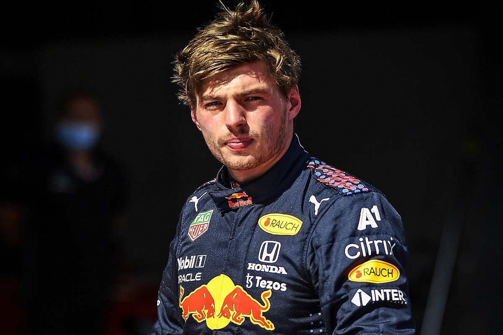
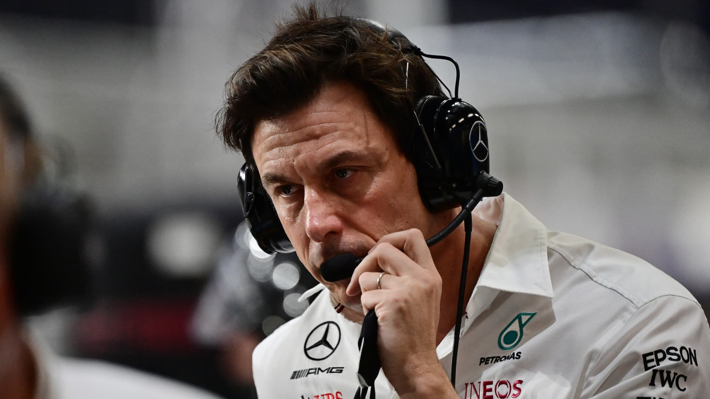
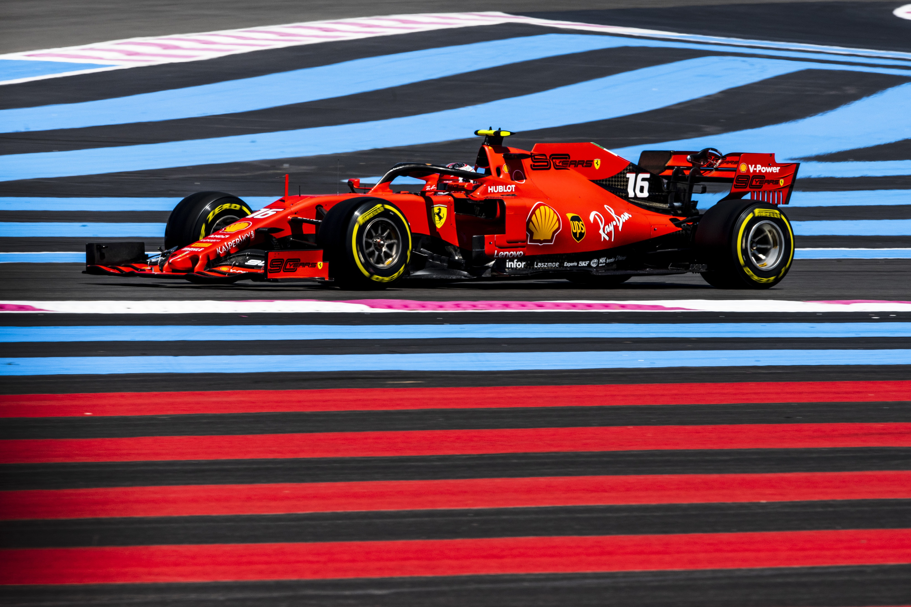

My Favorite pilots are :
- McLaren🧡 - Daniel Ricardo (rip Noris)
- RedBull - Max Verstappen 🟧🟦
- Alpine - Esteban Ocon 🇫🇷

Lots of opportunities
The world of Formula 1 offers thousands and thousands of possible jobs. Whether in engineering, marketing, selfie, communication, this sport absolutely touches everyone, this diversity makes it a sector of activity in its own right. Some like Toto Wolff rose through the ranks to manage the leading team: Mercedes-Benz

Paul Ricard
The history of the Var circuit begins with its founder Paul Ricard. The businessman, at the head of Pastis Ricard, owned a large plot near the town of Signes. Initially, he had an aerodrome built there. It was in 1962. In 1969, Paul Ricard decided to build a circuit on this same plateau. The circuit began to see the light of day in the first days of January 1970. On April 19 of the same year, the track was born to host the first round of the European 2-litre Prototype Championship. The large 5.8 kilometer circuit was completed the following month. Ten months after the first digging, it was inaugurated. The following year, F1 settled down in the Var, after two years at Clermon-Ferrand.
The history of the most beautiful circuit in the world, considered a pioneer, cannot be summed up here so to describe it you have to go there and live an experience through Formula 1